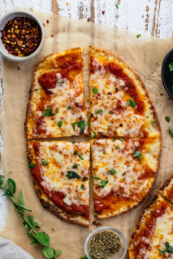

Lasagna

The Finished Dish
Everyone loves pizza night. This dish is so fast and tasty at the same time!
- Noodles
- Sauce
- Cheese
- More Cheese
- Preheat oven to 425
- Boil the noodles to make them soft
- Layer pan with noodles then cheese
- Repeat step 3
- Cook for 3 hours